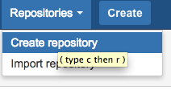
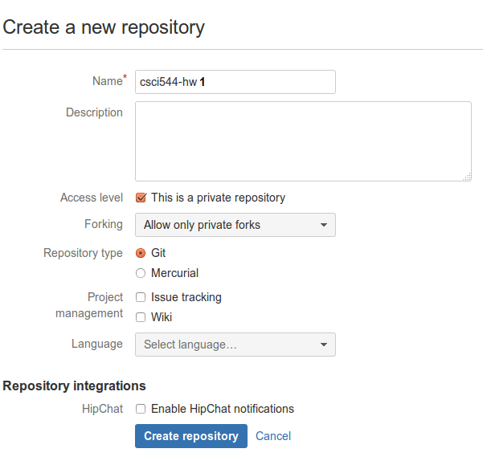
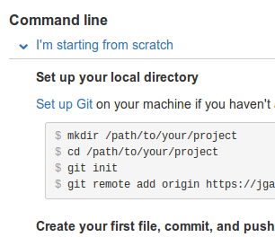
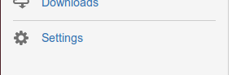
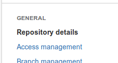

All homework assignments will be completed through your Bitbucket account. If you don't have a Bitbucket account, please register for one. If you are unfamiliar with Bitbucket, follow the instructions for the tutorial repository. Please enter your Bitbucket account information here (this will be used for grading purposes).
In your Bitbucket account, go to Repositories > Create Repository
The repository name will be given to you in the assignment. For example, assignment1 requires the name "csci544-hw1". Note, this should be all lowercase. Set access to private and repository type to Git.
Follow the instructions for setting up a command line repository from scratch.
Grant access for grading. With your new repository selected, click "Settings" from the left menu options
On the settings screen, select the "Access management" option.
On the access management screen, add user csci544-f15-grader with Admin privileges (this allow us access for grading).